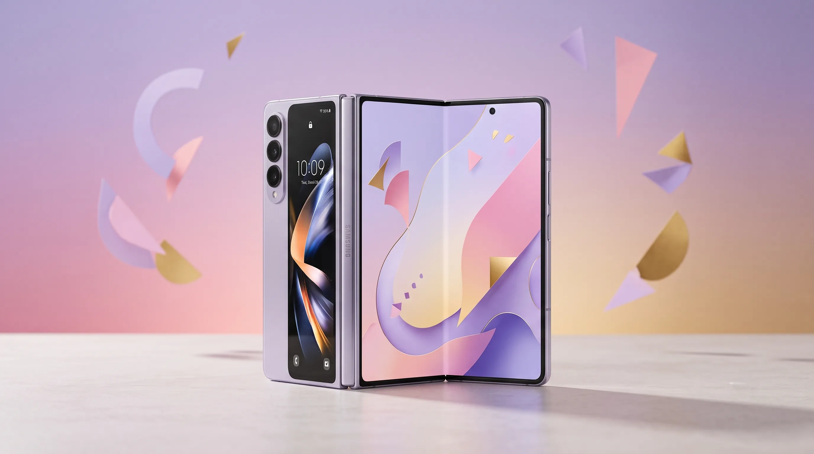

Samsung Galaxy Z Fold 8 'New Shape, New Joy' Teasers Officially Reveal a Wider, Shorter Foldable — Complete Design Breakdown Before July 22 Unpacked

Samsung has officially confirmed the Galaxy Z Fold 8's most significant design change since the foldable lineup launched: the phone is getting wider and shorter, abandoning the tall, narrow proportions that defined every Z Fold generation before it. The confirmation did not arrive through a conventional press release — Samsung wiped nearly all content from both its @SamsungMobile and @SamsungMobileUSA Instagram accounts, leaving only six sequential cryptic posts that progressively reveal the Fold 8's new form factor under the taglines "New Shape, New Joy," "Bold Stroke. New Shape," "A Sweet New Shape," and "A Whole New Slice." A Samsung Unpacked event is widely expected on July 22, 2026, where the full Galaxy Z Fold 8 lineup will be officially announced.
The practical significance of this design change is substantial for anyone who has used — or avoided — a Z Fold due to its famously narrow cover screen. By widening the phone's proportions, Samsung is directly addressing the single most consistent usability criticism of the entire Z Fold line: a cover screen too narrow for comfortable single-handed typing and everyday smartphone use. The teaser also introduces a palette of purple, pink, and golden color options for the series, and hints at a two-tier lineup that includes a Galaxy Z Fold 8 Ultra — which, in a counterintuitive move, leaks suggest will retain the older, taller form factor rather than adopting the new wider design. With 20 days until the expected Unpacked reveal, here is everything the teasers have confirmed and what they strongly imply about Samsung's most anticipated foldable of 2026.
Samsung's Galaxy Z Fold 8 Instagram Wipe — The 'New Shape, New Joy' Teaser Campaign Fully Decoded
Samsung's "New Shape, New Joy" campaign is one of the most deliberate and aggressive pre-launch social media strategies the company has executed in the Galaxy Z Fold era. The mechanics are straightforward but high-impact: both @SamsungMobile and @SamsungMobileUSA — accounts with tens of millions of followers built through years of product marketing content — had nearly their entire posting histories wiped, leaving only six cryptic teaser posts. Each post advances a single visual narrative: the tall silhouette of the Galaxy Z Fold 7 being progressively cut, trimmed, and redrawn into the shorter, wider proportions of the Fold 8. The tagline sequence — "New Shape, New Joy," "Bold Stroke. New Shape," "A Sweet New Shape," "A Whole New Slice" — escalates in specificity, confirming that the form factor change is the central marketing story Samsung has chosen to lead with for this generation.
Expert analysis of this campaign strategy reveals why Samsung chose an Instagram account wipe rather than a conventional teaser. Wiping established accounts forces every follower into direct, sequential engagement with only the content Samsung wants them to see — there is no competing post, no older product announcement, no unrelated content to scroll past. It is an editorial act that converts an account with millions of followers into a single-purpose six-post experience. Samsung has effectively built a landing page inside Instagram, one with an existing audience and zero distractions. The risk of such a move — alienating followers who valued the existing content history — is real, but Samsung's willingness to absorb that risk signals genuine confidence that the Galaxy Z Fold 8's new design is different enough to warrant a campaign built entirely around communicating that difference. A minor iterative update does not justify wiping your Instagram history. A genuinely new form factor does.
The color reveal embedded within the campaign deserves specific attention. One of the six teaser posts cuts through a palette of purple, pink, and golden hues before landing on a Galaxy Z Fold 8 lockscreen wallpaper prominently featuring the number 8. In Samsung's pre-Unpacked teaser history, color palette reveals in official posts have consistently translated to confirmed colorways at launch — Samsung does not tease colors it does not plan to ship. The purple, pink, and golden options represent a departure from the more conservative grey, black, and beige tones that dominated earlier Fold generations, suggesting Samsung is positioning the Fold 8 as a more expressive, fashion-forward device — consistent with the wider design's intent to attract first-time foldable buyers who found previous Z Fold proportions too utilitarian.
What the Galaxy Z Fold 8's Wider Design Actually Means — Cover Screen, Aspect Ratio, and Usability Impact
The Galaxy Z Fold 8's shift to a wider, shorter form factor is not a cosmetic choice — it is a direct engineering response to six years of documented usability criticism targeting the Z Fold line's most persistent weakness: the cover screen. Every Galaxy Z Fold from the original through the Fold 7 shipped with a cover screen that, when measured by aspect ratio, was closer to a TV remote than a smartphone. The tall, narrow proportions produced a cover screen that was challenging to use one-handed, required awkward thumb stretching for standard keyboard use, and limited the practical utility of the cover display as a standalone smartphone surface. Many Z Fold users adopted a consistent workaround behavior — unfolding the device for nearly all tasks rather than using the cover screen — that undermined the phone's primary proposition as a device offering two distinct use modes.
A wider, shorter form factor changes this ratio fundamentally. When Samsung widens the Fold 8's proportions, the cover screen gains horizontal real estate that directly improves the experience of typing, reading, social media browsing, camera use, and every other task where thumb reach and display width determine usability. The "shorter" dimension is the necessary geometric consequence of widening a device that must still fit in a standard pocket — Samsung is redistributing the same physical footprint into a more ergonomically useful shape rather than simply making a larger phone. This is precisely the design adjustment that Android foldable competitors — most notably the OnePlus Open and Google's own foldable research directions — have indicated through their own wider-format designs is the correct direction for book-style foldables aimed at mainstream adoption.
The market impact of this change extends beyond existing Galaxy Z Fold owners considering an upgrade. The Z Fold lineup has historically appealed primarily to enthusiasts willing to accept the usability compromise of a narrow cover screen in exchange for the large inner display. A wider cover screen removes that compromise, opening the Galaxy Z Fold 8 to a significantly broader audience of potential buyers who have followed the category but consistently cited the cover screen experience as the reason they have not purchased. Samsung's decision to build an entire teaser campaign around the shape change — rather than leading with camera specs, processing improvements, or software features — reflects internal data suggesting that design is the primary purchase barrier the Fold 8 needs to address. The "New Shape, New Joy" tagline is not just marketing copy; it is a diagnosis of why previous Fold generations underperformed their potential market size.
Galaxy Z Fold 8 vs Fold 7 — The Form Factor Comparison and Why the Change Took This Long
Also Read
More Technology stories →Comparing the Galaxy Z Fold 8 versus the Galaxy Z Fold 7 on form factor alone tells a story of six years of market feedback finally reaching the hardware decision-making process. The Galaxy Z Fold 7 measured 153.5mm tall by 67.1mm wide when closed — a 2.29:1 aspect ratio that produced the narrow, elongated cover screen that became the line's signature usability limitation. Based on the proportions visible in Samsung's teaser silhouettes, the Galaxy Z Fold 8 is substantially shorter and wider in its closed state, moving toward an aspect ratio closer to 20:9 — the standard that the mainstream smartphone market has converged on as the benchmark for comfortable one-handed use.
The engineering question is why this change did not happen sooner. Widening a book-style foldable phone is not a trivial manufacturing decision. The hinge mechanism — the most complex and cost-intensive component of any foldable device — must be redesigned to accommodate a different width. The inner flexible display must be respecified with new dimensions. Battery configuration, antenna placement, and thermal management all need to be repositioned for the new proportions. Every supply chain contract tied to the previous form factor's dimensions must be renegotiated. In other words, widening the Fold 8 represents an engineering overhaul across every structural component of the device — it is a platform redesign, not a screen size adjustment. The length of time it took Samsung to execute this change reflects the genuine complexity of the undertaking, not indifference to user feedback.
The practical implications for upgrading Fold 7 owners versus new foldable buyers are different. Existing Fold 7 owners will find the Fold 8's cover screen immediately and noticeably more usable — the wider display changes the fundamental experience of using the closed phone as a daily driver. For prospective buyers who are evaluating their first foldable purchase, the Fold 8's wider design removes the most frequently cited barrier to purchase in user research on the category. Both groups benefit, but the Fold 8's design change is arguably more impactful for attracting new buyers than retaining existing ones — which suggests Samsung is prioritizing market expansion over retention with this generation's hardware decisions.
Galaxy Z Fold 8 Ultra: Why Samsung Kept the Taller Design — Expert Analysis of the Two-Tier Strategy
The Galaxy Z Fold 8 Ultra's expected retention of the older, taller Galaxy Z Fold 7 form factor is the most counterintuitive element of Samsung's 2026 foldable lineup — and also the most strategically revealing. On the surface, it appears contradictory for Samsung to simultaneously declare the wider form factor a "new joy" for the standard Fold 8 while offering a premium Ultra variant that uses the shape Samsung just announced it is moving away from. The explanation lies in understanding who the Ultra is positioned for and what "Ultra" is meant to communicate in Samsung's product taxonomy.
Expert analysis of Samsung's Galaxy S Ultra positioning provides the interpretive framework. In Samsung's S-series lineup, the "Ultra" designation has consistently meant the largest, most powerful, most feature-complete device in the range — one that prioritizes capability over ergonomic compromise. Applied to the Z Fold lineup, an Ultra variant retaining the taller form factor is a coherent strategy if the design change is tied to specific trade-offs: a taller inner display offers more vertical real estate for productivity tasks, multi-window usage, and document viewing — genuine use cases for the power-user and enterprise buyer that the Ultra label targets. The taller outer shell also accommodates a larger battery footprint and potentially more complex camera optics, both of which matter to the enthusiast segment. Samsung is essentially running a segmentation experiment with the Fold 8 generation: does the broader market want the new ergonomic shape, or does the premium enthusiast segment want maximum capability in the familiar tall format?
The leaked camera specifications for the Fold 8 Ultra complicate this narrative, however. Pre-launch reports have noted that the camera hardware for the Ultra variant "doesn't sound very Ultra" — suggesting the specifications do not deliver the step-function camera improvement that would justify a premium price tier over the standard Fold 8. If the Ultra is retaining the less ergonomic taller design without delivering a meaningfully superior camera system, its value proposition narrows to the preferences of buyers who specifically prefer the tall form factor for productivity tasks. That is a legitimate but limited market segment, and Samsung's ability to sustain a two-tier Z Fold lineup will depend on whether the Fold 8 Ultra justifies its premium through real-world usage advantages that the spec sheet alone has not yet confirmed.
Galaxy Z Fold 8 Launch Date: July 22, 2026 Unpacked — What to Expect at the Announcement Event
Samsung has not published an official confirmed launch date for the Galaxy Z Fold 8, but the July 22, 2026 Unpacked event date is supported by multiple converging signals: pre-launch leaks from reliable industry sources, Samsung's own established pattern of holding mid-summer Unpacked events for its foldable lineup in late July, and — critically — the timing of the "New Shape, New Joy" Instagram campaign itself. Samsung typically launches its major pre-Unpacked social media campaigns two to three weeks before the event, and the campaign's appearance in early July 2026 aligns precisely with a July 22 reveal. The aggressive Instagram account wipe is a move Samsung would not make more than three weeks before an Unpacked announcement — the sustained attention window required to maintain the campaign's momentum through a reveal event places July 22 firmly in the logical range.
At the July 22 Unpacked event, based on all available pre-launch information, consumers can expect the simultaneous unveiling of the standard Galaxy Z Fold 8 in its new wider form factor with purple, pink, and golden color options, alongside the Galaxy Z Fold 8 Ultra in the retained taller design. The event will almost certainly include hands-on demonstration time highlighting the cover screen experience of the new wider design — the change Samsung has built its entire campaign around — as well as camera system reveals, pricing announcements, and pre-order details. Given the camera leak controversy surrounding the Ultra, the Unpacked presentation of camera specifications and sample imagery will be closely scrutinized by reviewers and enthusiast buyers comparing the Ultra against both the standard Fold 8 and competing devices from OnePlus, Google, and emerging foldable manufacturers.
The pricing context of the July 22 announcement is particularly significant in 2026. With Microsoft raising Xbox hardware prices and Apple increasing MacBook and iPad prices due to AI-driven component cost pressures in the same month, consumer electronics pricing is under broad scrutiny. Samsung's Galaxy Z Fold pricing — which has historically started at $1,799 and above for the premium Z Fold line — enters this environment at a moment when buyers are already absorbing price increases across multiple product categories. How Samsung positions the Fold 8 and Fold 8 Ultra on price relative to the previous generation will be a critical factor in whether the new wider design's expanded addressable market translates to actual expanded sales volume.
Key Takeaways
- Samsung officially confirmed the Galaxy Z Fold 8's wider, shorter design through the "New Shape, New Joy" Instagram campaign — wiping both @SamsungMobile and @SamsungMobileUSA accounts down to six sequential teaser posts that visualize the form factor change from the Fold 7's tall proportions to the Fold 8's new shape.
- The design shift directly addresses the Z Fold line's six-year cover screen usability problem: a wider form factor means a more ergonomic cover display with a closer-to-standard aspect ratio, improving one-handed typing, reading, and everyday smartphone use without unfolding the device.
- A Galaxy Z Fold 8 Ultra variant is expected alongside the standard model — but leaks suggest it retains the older, taller Fold 7 form factor, creating a two-tier lineup with differentiated designs: the Fold 8 for buyers who want the new ergonomic shape, and the Ultra for power users who prefer maximum inner display height for productivity.
- Purple, pink, and golden color options are strongly implied by the official teaser posts, representing a more expressive palette than previous Z Fold generations — consistent with Samsung targeting first-time foldable buyers alongside existing upgraders.
- The July 22, 2026 Galaxy Unpacked event is widely expected to deliver the full reveal, with camera specs, final pricing, and pre-order availability — though pre-launch camera leaks for the Ultra have been received with skepticism by industry reviewers.
Frequently Asked Questions
What is Samsung's 'New Shape, New Joy' teaser campaign for the Galaxy Z Fold 8?
Samsung's "New Shape, New Joy" campaign is a calculated pre-launch teaser strategy built around wiping nearly all content from both @SamsungMobile and @SamsungMobileUSA Instagram accounts, leaving only six sequential posts. Each post advances a single visual narrative — the tall Galaxy Z Fold 7 silhouette being cut and redrawn into the wider, shorter proportions of the Fold 8 — with taglines including "New Shape, New Joy," "Bold Stroke. New Shape," "A Sweet New Shape," and "A Whole New Slice." The campaign also embeds a color palette reveal of purple, pink, and golden hues in one of the posts. Samsung's decision to wipe established accounts rather than simply add teaser content is an aggressive editorial choice that converts the accounts into a focused six-post experience, eliminating competing content and directing followers entirely toward the form factor story Samsung needs to communicate before July 22 Unpacked.
When will the Galaxy Z Fold 8 officially launch?
Samsung has not confirmed an official launch date, but all credible pre-launch reporting and leaks point to July 22, 2026 as the Galaxy Unpacked event where the Galaxy Z Fold 8 and Galaxy Z Fold 8 Ultra will be officially announced. The timing of the "New Shape, New Joy" Instagram campaign in early July 2026 is consistent with Samsung's established pattern of launching major pre-Unpacked social media pushes two to three weeks before a reveal event. Consumers expecting to purchase at launch should plan for a July 22 announcement with pre-orders opening that same day or shortly after, based on previous Unpacked event structures.
What is different about the Galaxy Z Fold 8 design compared to the Galaxy Z Fold 7?
The Galaxy Z Fold 8 features a fundamentally different aspect ratio — wider and shorter than the tall, narrow dimensions of the Galaxy Z Fold 7 and all previous Z Fold generations. The most consequential practical change is the wider cover screen, which directly improves the experience of using the closed phone for everyday smartphone tasks: one-handed typing, reading, browsing, and camera use all benefit from the wider display proportions. Samsung's teasers visualize this change explicitly by showing the Fold 7's silhouette being cut down to the Fold 8's new shape. The change required a full engineering redesign across the hinge mechanism, flexible display specifications, battery configuration, and structural components — it is a platform overhaul, not an incremental update.
What is the Galaxy Z Fold 8 Ultra and why does it keep the old taller design?
The Galaxy Z Fold 8 Ultra is a premium-tier variant that is expected to retain the taller, narrower form factor of the Galaxy Z Fold 7 rather than adopting the standard Fold 8's new wider shape. Samsung's apparent reasoning reflects its "Ultra" product strategy: the taller inner display offers more vertical real estate for productivity tasks, multi-window use, and document viewing — use cases that matter to the power-user and enterprise buyers the Ultra targets. A taller form also accommodates a larger battery footprint. However, pre-launch camera specification leaks for the Ultra have been described by reviewers as underwhelming — "not very Ultra" — which weakens the value proposition for buyers who would pay a premium specifically for superior imaging capabilities. The July 22 Unpacked reveal will be critical in establishing whether the Ultra's real-world advantages justify its expected price over the standard Fold 8.
What colors are confirmed or expected for the Galaxy Z Fold 8 series?
Samsung's official teaser posts include a clearly visible palette of purple, pink, and golden hues, which cut directly to a Galaxy Z Fold 8 lockscreen wallpaper featuring the number 8. In Samsung's pre-Unpacked teaser history, color palette appearances in official posts have consistently mapped to confirmed launch colorways — Samsung does not tease colors it does not ship. The purple, pink, and golden options represent a more expressive and fashion-forward range than the conservative grays and blacks that dominated earlier Z Fold generations, consistent with Samsung's apparent strategy of positioning the Fold 8 to attract first-time foldable buyers alongside existing Galaxy Z Fold upgraders.
What are the Galaxy Z Fold 8 camera specs and are they a major upgrade?
Camera specifications for both the Galaxy Z Fold 8 and Galaxy Z Fold 8 Ultra have surfaced through pre-launch leaks, and the reception among industry reviewers has been mixed to skeptical — particularly for the Ultra variant, with some noting the specifications "don't sound very Ultra" relative to the premium positioning the Ultra label implies. Samsung has not officially confirmed any camera hardware ahead of the July 22, 2026 Unpacked event. A reliable assessment of camera performance will require both the official specification announcement and hands-on sample testing after the device ships. Buyers prioritizing the camera system above all other factors should wait for the full Unpacked reveal before making purchase decisions based on pre-launch leak data.
Conclusion
The Samsung Galaxy Z Fold 8 "New Shape, New Joy" teaser campaign has done something that years of spec-sheet improvements could not: it has made the case that this generation of the Z Fold is fundamentally different from what came before. The form factor change — from the tall, narrow proportions that defined six generations of Z Fold hardware to a wider, shorter design that directly addresses the cover screen usability criticism that has followed the lineup since launch — is the kind of structural improvement that changes who considers a device, not just who buys an upgrade. Samsung's decision to build an entire pre-Unpacked campaign around that shape change, culminating in the aggressive account wipe strategy, reflects a level of confidence in the hardware that the company's marketing teams do not typically show before an Unpacked reveal.
For consumers tracking the Galaxy Z Fold 8 ahead of July 22, the picture that emerges from the teasers is of a device lineup with genuinely differentiated products for different buyers: the standard Fold 8 targets anyone who has been waiting for a Z Fold with a usable cover screen, while the Fold 8 Ultra — despite its confusing retention of the older taller form factor and mixed camera leak reception — targets productivity-focused power users who prioritize inner display real estate and established form factor familiarity. The July 22 Unpacked event will fill in the remaining variables: final pricing against a challenging consumer electronics cost environment, definitive camera specifications for both models, and the hands-on evidence that will determine whether the new wider design delivers on the "new joy" Samsung has committed to as its central promise for this generation.
The Galaxy Z Fold 8 arrives at a moment when the foldable smartphone market is still establishing whether book-style foldables can achieve mainstream adoption beyond the enthusiast segment. Samsung's bet — that the cover screen was the primary adoption barrier and that a wider design removes it — is a testable hypothesis. July 22, 2026 begins the test. The market's response in the months that follow will determine whether "New Shape, New Joy" was the correct diagnosis of what the Galaxy Z Fold needed all along.

Marcus J. Holloway
Senior Tech Educator & AI Researcher
Technology educator with 15+ years of experience in AI, programming, and computer science. Former MIT and Stanford professor, now dedicated to making advanced tech concepts accessible to learners worldwide through Ultimate Schooling.
💬 Questions or Comments?
Have a question about this tutorial or want to share your thoughts? Leave a comment below!